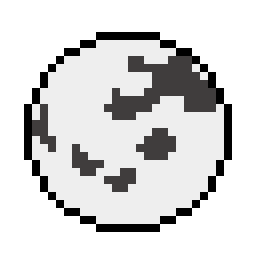

Moon And Stars
Moon and Stars is an interactive animation written in p5.js for Creative Coding. The task was to create a sprite animation, so I made a sprite of the moon using Piskel and I forked an earlier assignment where stars drifted across the sky with each mouse click.
